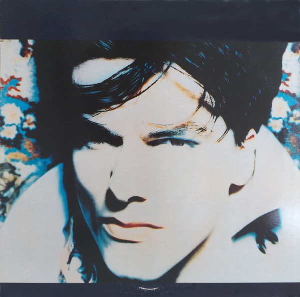

LP
She Was Only A Grocer's Daughter
The Blow Monkeys
Media: — · Sleeve: —
—
Personal
Discogs SuggestedCA$5.55
Discogs MedianCA$5.55
Discogs HighCA$5.55
- Physical Copy ID
- BB-LP-034
- Year
- 1987
- Label
- RCA
- Catalog #
- 6246-1-R
- Country
- USUS
- Genre / Style
- Electronic, Rock, Funk / Soul, Pop · Synth-pop, Disco